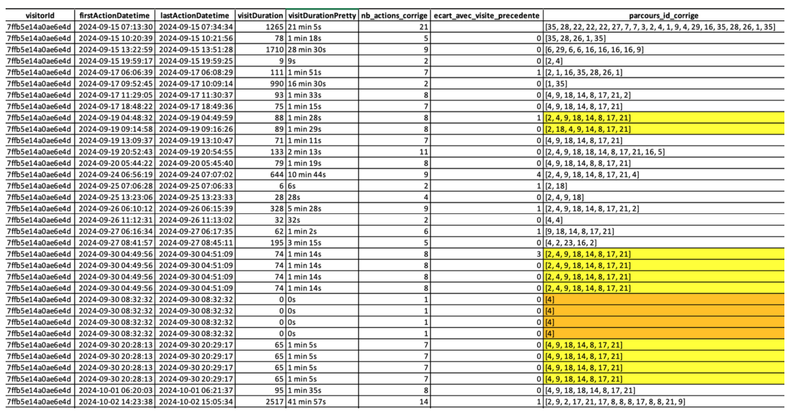
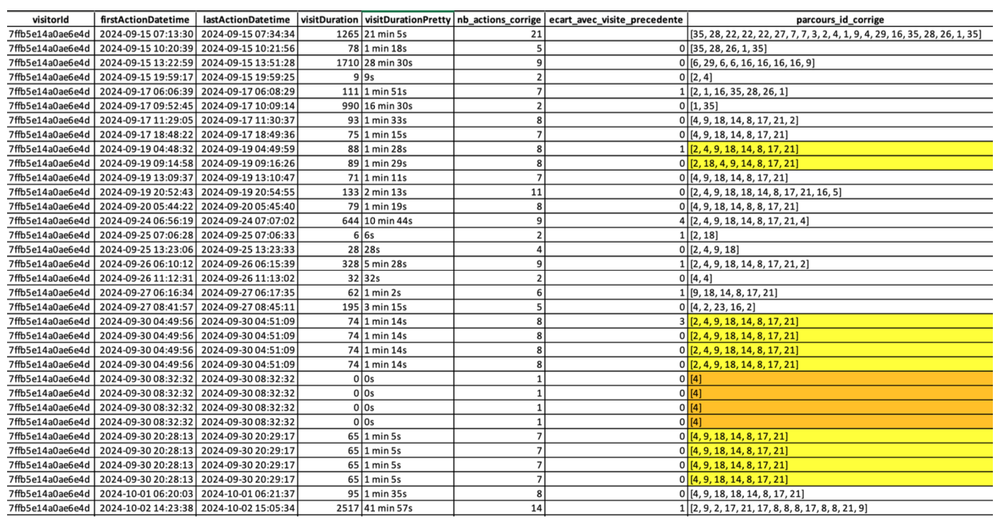

Learning Analytics - Master Thesis
This thesis was conducted as part of the Master's in Economic Analysis and Policy (specialization: Statistics for Evaluation and Forecasting) at the University of Reims Champagne-Ardenne. It explores Learning Analytics through a case study of the online learning platform Éducapacités.
In response to the digital transformation of education—intensified by the 2020 global health crisis—the thesis investigates how user interaction data can help improve learner engagement. The core objective is to develop a structured analytical framework for understanding user behaviors on digital platforms, thereby identifying improvement pathways tailored to diverse learner profiles.
Key Contributions:
- Data Anonymization & Cleaning: Applied GDPR-compliant SHA-256 hashing to anonymize sensitive user data, followed by extensive cleaning and restructuring of a large dataset (initially over 4,000 columns).
- Engagement Indicators: Defined measurable engagement indicators based on literature, including session duration, visit frequency, and navigation diversity.
- Behavioral Analysis: Identified common navigation paths and engagement patterns, using both exploratory statistics and visual analytics.
- Limitations: Highlighted critical limitations such as lack of granularity in content-level interactions and potential teacher-driven bias in student navigation.
- Tools Used: Analysis was conducted using both R and Python, with a transition to Python to align with the research team's stack.
Despite the constraints, the project provides a first operational layer for future research in Learning Analytics, contributing directly to a doctoral project and collaborative research involving Éducapacités’ development team.
Here are a few images of the work. If you want to explore the full project, including all scripts, datasets, and reports, you can visit my Git repository (link at the bottom of the main page).
Image Gallery


 
